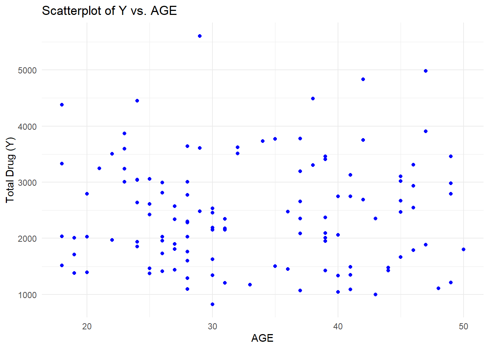
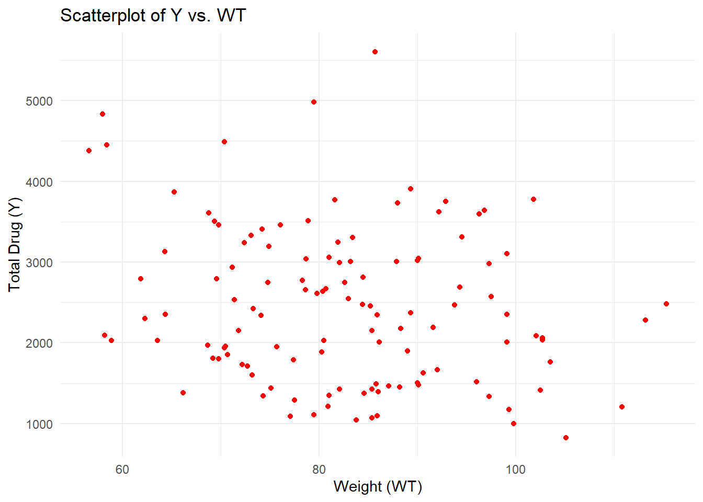
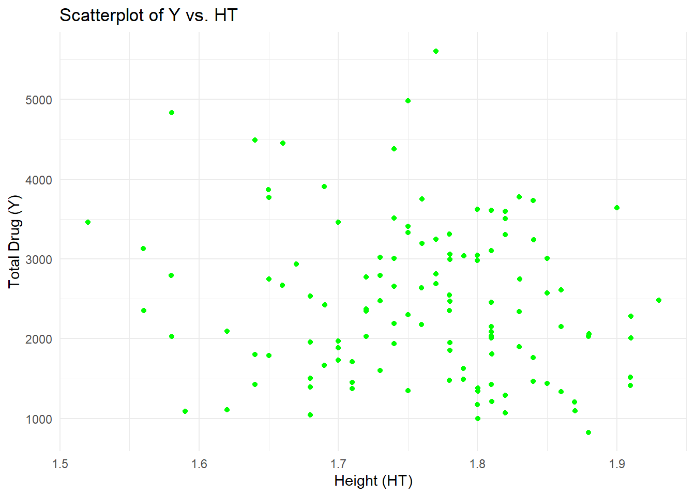
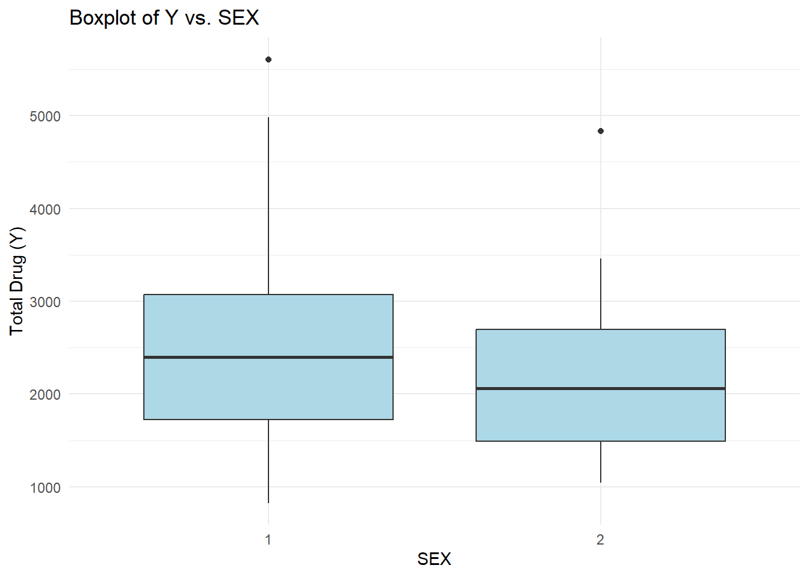
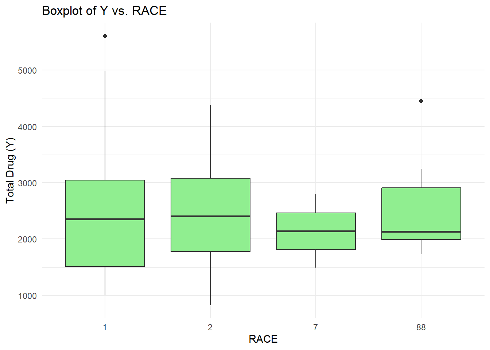
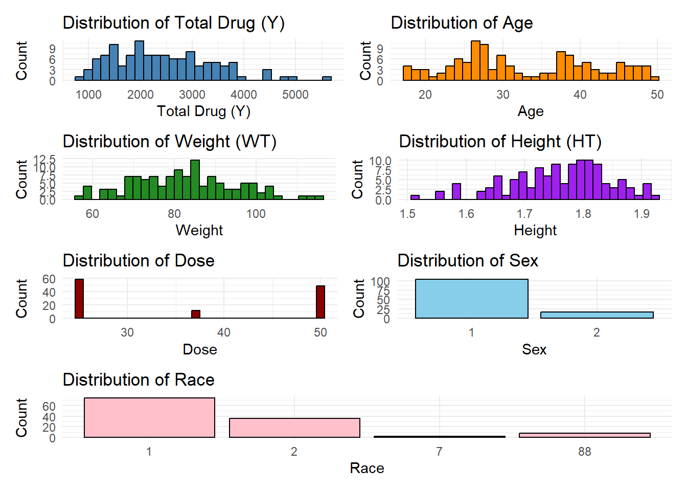

We see that the mean age is 33.26. The mean height and weight are 83.60 and 1.76 - thus the mean BMI is 26.98 (overweight).
Scatterplots:
library(ggplot2)# Scatterplot of Y vs. AGEggplot(drug_mag_final, aes(x = AGE, y = Y)) +geom_point(color ='blue') +labs(title ="Scatterplot of Y vs. AGE", x ="AGE", y ="Total Drug (Y)") +theme_minimal()

# Scatterplot of Y vs. WT (weight)ggplot(drug_mag_final, aes(x = WT, y = Y)) +geom_point(color ='red') +labs(title ="Scatterplot of Y vs. WT", x ="Weight (WT)", y ="Total Drug (Y)") +theme_minimal()

# Scatterplot of Y vs. HT (height)ggplot(drug_mag_final, aes(x = HT, y = Y)) +geom_point(color ='green') +labs(title ="Scatterplot of Y vs. HT", x ="Height (HT)", y ="Total Drug (Y)") +theme_minimal()

Age and total drug do not seem to have any linear relationship. Similarly, no clear relationship is seem between total drug and weight or height.
Boxplots:
# Boxplot of Y vs. SEXggplot(drug_mag_final, aes(x =factor(SEX), y = Y)) +geom_boxplot(fill ='lightblue') +labs(title ="Boxplot of Y vs. SEX", x ="SEX", y ="Total Drug (Y)") +theme_minimal()

# Boxplot of Y vs. RACEggplot(drug_mag_final, aes(x =factor(RACE), y = Y)) +geom_boxplot(fill ='lightgreen') +labs(title ="Boxplot of Y vs. RACE", x ="RACE", y ="Total Drug (Y)") +theme_minimal()

Sex = 2 has a slightly lower mean total drug administered. The mean total drug by race seems to be the same.
Distributions:
library(ggplot2)library(patchwork) # To combine plots# Histogram for continuous variablesp1 <-ggplot(drug_mag_final, aes(x = Y)) +geom_histogram(fill ='steelblue', color ='black', bins =30) +labs(title ="Distribution of Total Drug (Y)", x ="Total Drug (Y)", y ="Count") +theme_minimal()p2 <-ggplot(drug_mag_final, aes(x = AGE)) +geom_histogram(fill ='darkorange', color ='black', bins =30) +labs(title ="Distribution of Age", x ="Age", y ="Count") +theme_minimal()p3 <-ggplot(drug_mag_final, aes(x = WT)) +geom_histogram(fill ='forestgreen', color ='black', bins =30) +labs(title ="Distribution of Weight (WT)", x ="Weight", y ="Count") +theme_minimal()p4 <-ggplot(drug_mag_final, aes(x = HT)) +geom_histogram(fill ='purple', color ='black', bins =30) +labs(title ="Distribution of Height (HT)", x ="Height", y ="Count") +theme_minimal()p5 <-ggplot(drug_mag_final, aes(x = DOSE)) +geom_histogram(fill ='darkred', color ='black', bins =30) +labs(title ="Distribution of Dose", x ="Dose", y ="Count") +theme_minimal()# Bar plots for categorical variablesp6 <-ggplot(drug_mag_final, aes(x =factor(SEX))) +geom_bar(fill ='skyblue', color ='black') +labs(title ="Distribution of Sex", x ="Sex", y ="Count") +theme_minimal()p7 <-ggplot(drug_mag_final, aes(x =factor(RACE))) +geom_bar(fill ='pink', color ='black') +labs(title ="Distribution of Race", x ="Race", y ="Count") +theme_minimal()# Combine the plots(p1 + p2) / (p3 + p4) / (p5 + p6) / p7

The distributions are as expected. Weight is normally distributed. Height is slightly skewed. Age seems to have a bimodal distribution.
Correlation plots:
library(GGally)
Registered S3 method overwritten by 'GGally':
method from
+.gg ggplot2
library(ggplot2)# Select only continuous variables for pair plotscontinuous_vars <- drug_mag_final %>%select(Y, AGE, WT, HT, DOSE)# Pair plot with customized bin widthggpairs(continuous_vars, lower =list(continuous =wrap("points", alpha =0.5)),upper =list(continuous =wrap("cor", size =4)),diag =list(continuous =wrap("barDiag", fill ="steelblue", binwidth =5)),title ="Pair and Correlation Plot of Continuous Variables")
The correlation between total drug and weight is significant (-0.210). The drug may have been dosed based on body weight. Other correlations are not relevant to the drug.
Call:
lm(formula = Y ~ DOSE + HT + WT + AGE + as.factor(SEX) + as.factor(RACE),
data = drug_mag_final)
Residuals:
Min 1Q Median 3Q Max
-1480.86 -367.81 -79.95 266.15 2431.52
Coefficients:
Estimate Std. Error t value Pr(>|t|)
(Intercept) 3386.863 1835.153 1.846 0.067623 .
DOSE 59.935 4.880 12.281 < 2e-16 ***
HT -748.487 1103.979 -0.678 0.499188
WT -23.047 6.395 -3.604 0.000471 ***
AGE 3.155 7.825 0.403 0.687530
as.factor(SEX)2 -357.734 216.928 -1.649 0.101957
as.factor(RACE)2 155.034 128.627 1.205 0.230650
as.factor(RACE)7 -405.320 448.189 -0.904 0.367768
as.factor(RACE)88 -53.505 244.668 -0.219 0.827296
---
Signif. codes: 0 '***' 0.001 '**' 0.01 '*' 0.05 '.' 0.1 ' ' 1
Residual standard error: 614.3 on 111 degrees of freedom
Multiple R-squared: 0.6193, Adjusted R-squared: 0.5919
F-statistic: 22.57 on 8 and 111 DF, p-value: < 2.2e-16
We can see that dose and weight are significant predictors of Y. The R-squared has increased to 0.6193, F-statistic = 22.57 and p-value < 0.05, thus this model is a better fit than the previous model.
Compare the root mean square error and R-squared:
#Model 1# Get predictions for model 1predictions <-predict(dose_model)# Calculate RMSEactuals <- drug_mag_final$Yrmse <-sqrt(mean((predictions - actuals)^2))# Calculate R-squaredr_squared <-summary(dose_model)$r.squared# Print resultscat("RMSE:", round(rmse, 2), "\n")
RMSE: 666.46
cat("R-squared:", round(r_squared, 2), "\n")
R-squared: 0.52
#Model 2# Get predictions for model 2predictions <-predict(full_model)# Calculate RMSEactuals <- drug_mag_final$Yrmse <-sqrt(mean((predictions - actuals)^2))# Calculate R-squaredr_squared <-summary(full_model)$r.squared# Print resultscat("RMSE:", round(rmse, 2), "\n")
RMSE: 590.85
cat("R-squared:", round(r_squared, 2), "\n")
R-squared: 0.62
The RMSE for model 1 is greater than model 2, which means model 2 is a better fit. Similarly, R-squared increased, thus model 2 explains 62% of the variation in Y.
Logistic regression: Fitting a model to predict SEX using DOSE
Call:
glm(formula = SEX ~ DOSE, family = binomial, data = drug_mag_final)
Coefficients:
Estimate Std. Error z value Pr(>|z|)
(Intercept) -0.76482 0.85395 -0.896 0.370
DOSE -0.03175 0.02432 -1.306 0.192
(Dispersion parameter for binomial family taken to be 1)
Null deviance: 94.242 on 119 degrees of freedom
Residual deviance: 92.431 on 118 degrees of freedom
AIC: 96.431
Number of Fisher Scoring iterations: 5
We see that obviously, dose is not a significant predictor of sex.
Model with all predictors
full_sex_model =glm(SEX~DOSE + Y + HT + WT + AGE +as.factor(RACE), data=drug_mag_final, family=binomial)summary(full_sex_model)
Call:
glm(formula = SEX ~ DOSE + Y + HT + WT + AGE + as.factor(RACE),
family = binomial, data = drug_mag_final)
Coefficients:
Estimate Std. Error z value Pr(>|z|)
(Intercept) 6.033e+01 1.804e+01 3.345 0.000824 ***
DOSE -3.076e-02 7.761e-02 -0.396 0.691893
Y -1.040e-03 9.628e-04 -1.081 0.279840
HT -3.320e+01 1.108e+01 -2.995 0.002744 **
WT -6.283e-02 7.942e-02 -0.791 0.428908
AGE 8.340e-02 6.074e-02 1.373 0.169724
as.factor(RACE)2 -1.927e+00 1.375e+00 -1.402 0.160967
as.factor(RACE)7 1.176e-01 3.846e+00 0.031 0.975604
as.factor(RACE)88 -1.500e+00 2.195e+00 -0.683 0.494317
---
Signif. codes: 0 '***' 0.001 '**' 0.01 '*' 0.05 '.' 0.1 ' ' 1
(Dispersion parameter for binomial family taken to be 1)
Null deviance: 94.242 on 119 degrees of freedom
Residual deviance: 32.077 on 111 degrees of freedom
AIC: 50.077
Number of Fisher Scoring iterations: 8
Here, height is a significant predictor of sex. This makes sense since women are on average shorter than men.
Accuracy and ROC-AUC:
library(pROC)
Type 'citation("pROC")' for a citation.
Attaching package: 'pROC'
The following objects are masked from 'package:stats':
cov, smooth, var
We see that accuracy for Model 2 is greater than Model 1, thus model 2 is able to predict sex with greater accuracy (94.17% of the time).
Receiver operating characteristic - area under the curve (ROC-AUC) tells us how well the model is able to distinguish between SEX = 1 and SEX = 2. For model 1, ROC-AUC = 0.592, so it is only slightly better at distinguishing compared to a random model. For model 2, ROC-AUC = 0.98, thus it is excellent at distinguishing between the sexes.
Exercise 10: Model Improvement
Remove the variable race:
drug_mag_final$RACE <-NULL
We now have a dataset with 120 observations and 6 variables.
Now, we set a random seed for reproducibility
rngseed =1234
Now, we split the data - 75% train and 25% test set:
# Load the rsample package (part of tidymodels)library(rsample)# Set the seed for reproducibilityset.seed(rngseed)# Split the data into 75% train and 25% testdata_split <-initial_split(drug_mag_final, prop =3/4)# Create data frames for the two setstrain_data <-training(data_split) # 75% training settest_data <-testing(data_split) # 25% test set
── Conflicts ───────────────────────────────────────── tidymodels_conflicts() ──
✖ purrr::discard() masks scales::discard()
✖ dplyr::filter() masks stats::filter()
✖ kableExtra::group_rows() masks dplyr::group_rows()
✖ dplyr::lag() masks stats::lag()
✖ recipes::step() masks stats::step()
• Dig deeper into tidy modeling with R at https://www.tmwr.org
# Model 1: Only DOSEdose_only_model <-linear_reg() %>%set_engine("lm") %>%set_mode("regression") %>%fit(Y ~ DOSE, data = train_data)dose_only_predictions <-predict(dose_only_model, new_data = train_data) %>%bind_cols(train_data)dose_only_rmse <- dose_only_predictions %>%rmse(truth = Y, estimate = .pred)# Model 2: All predictorsfull_predictors_model <-linear_reg() %>%set_engine("lm") %>%set_mode("regression") %>%fit(Y ~ DOSE + HT + WT + AGE +as.factor(SEX), data = train_data)full_predictors_predictions <-predict(full_predictors_model, new_data = train_data) %>%bind_cols(train_data)full_predictors_rmse <- full_predictors_predictions %>%rmse(truth = Y, estimate = .pred)# Null Modelnull_model <-null_model() %>%set_engine("parsnip") %>%set_mode("regression") %>%fit(Y ~1, data = train_data)null_predictions <-predict(null_model, new_data = train_data) %>%bind_cols(train_data)null_rmse <- null_predictions %>%rmse(truth = Y, estimate = .pred)# Print all RMSE results in the desired ordercat("DOSE-only Model RMSE:", dose_only_rmse$.estimate, "\n")
DOSE-only Model RMSE: 702.8078
cat("Full Predictors Model RMSE:", full_predictors_rmse$.estimate, "\n")
Full Predictors Model RMSE: 627.4408
cat("Null Model RMSE:", null_rmse$.estimate, "\n")
Null Model RMSE: 948.3526
We see that the highest RMSE value is observed with the null model, followed by the dose-only model, followed by the model using all the predictors. Since the model with all the predictors has the lowest RMSE, this model provides the best overall fit.
Now, we move on to the cross-validation part:
# Set the random seedset.seed(rngseed)# Splitting the data into training and test setsdata_split <-initial_split(drug_mag_final, prop =0.75)train_data <-training(data_split)test_data <-testing(data_split)
Now, we perform the 10-fold cross-validation
library(tidymodels)# Set the random seed for reproducibilityset.seed(rngseed)# Create a 10-fold cross-validation objectcv_folds <-vfold_cv(train_data, v =10)# Model 1: Dose as predictordose_only_cv_model <-linear_reg() %>%set_engine("lm") %>%set_mode("regression")# Fit and evaluate Model 1 using 10-fold CVdose_only_cv_results <-fit_resamples( dose_only_cv_model, Y ~ DOSE,resamples = cv_folds,metrics =metric_set(yardstick::rmse) # Pass the metric function, not a string)# Extract the average RMSE across all foldsdose_only_cv_rmse <- dose_only_cv_results %>%collect_metrics() %>%filter(.metric =="rmse") %>%pull(mean)cat("DOSE-only Model Average RMSE (10-fold CV):", dose_only_cv_rmse, "\n")
DOSE-only Model Average RMSE (10-fold CV): 690.5398
# Model 2: All predictors# Specify the linear modelfull_predictors_cv_model <-linear_reg() %>%set_engine("lm") %>%set_mode("regression")# Fit and evaluate Model 2 using 10-fold CVfull_predictors_cv_results <-fit_resamples( full_predictors_cv_model, Y ~ DOSE + HT + WT + AGE +as.factor(SEX),resamples = cv_folds,metrics =metric_set(yardstick::rmse) # Wrap rmse in metric_set())# Extract the average RMSE across all foldsfull_predictors_cv_rmse <- full_predictors_cv_results %>%collect_metrics() %>%filter(.metric =="rmse") %>%pull(mean)cat("Full Predictors Model Average RMSE (10-fold CV):", full_predictors_cv_rmse, "\n")
Full Predictors Model Average RMSE (10-fold CV): 645.6909
The RMSE for the dose-only model decreased from 702 to 690, while that for the model with all the predictors increased from 627 to 645. Thus, using cross-validation improved the fit of one model.
Now, we compute standard error of the RMSE:
# Extract RMSE for each fold for Model 1dose_only_cv_rmse_folds <- dose_only_cv_results %>%collect_metrics(summarize =FALSE) %>%filter(.metric =="rmse")# Compute average RMSE and standard error for Model 1dose_only_cv_rmse <-mean(dose_only_cv_rmse_folds$.estimate)dose_only_cv_rmse_se <-sd(dose_only_cv_rmse_folds$.estimate) /sqrt(nrow(dose_only_cv_rmse_folds))# Extract RMSE for each fold for Model 2full_predictors_cv_rmse_folds <- full_predictors_cv_results %>%collect_metrics(summarize =FALSE) %>%filter(.metric =="rmse")# Compute average RMSE and standard error for Model 2full_predictors_cv_rmse <-mean(full_predictors_cv_rmse_folds$.estimate)full_predictors_cv_rmse_se <-sd(full_predictors_cv_rmse_folds$.estimate) /sqrt(nrow(full_predictors_cv_rmse_folds))# Print resultscat("DOSE-only Model RMSE Standard Error:", dose_only_cv_rmse_se, "\n\n")
DOSE-only Model RMSE Standard Error: 67.49509
cat("Full Predictors Model RMSE Standard Error:", full_predictors_cv_rmse_se, "\n")
Full Predictors Model RMSE Standard Error: 64.81927
We can see that the RMSE standard error for the model with all the predictors is smaller, indicating that it is a more robust model compared to the dose-only model.
Now, we run the code again using a different random seed:
library(tidymodels) # Load tidymodels (includes rsample, parsnip, yardstick, etc.)# Set a new random seed for reproducibilityset.seed(5678) # Changed from rngseed = 1234 to 5678# Create a 10-fold cross-validation objectcv_folds <-vfold_cv(train_data, v =10)# Define the models with new namesmodel_dose_only <-linear_reg() %>%set_engine("lm") %>%set_mode("regression")model_full_predictors <-linear_reg() %>%set_engine("lm") %>%set_mode("regression")# Fit and evaluate Model 1 (DOSE-only) using 10-fold CVresults_dose_only <-fit_resamples( model_dose_only, Y ~ DOSE,resamples = cv_folds,metrics =metric_set(yardstick::rmse) # Use RMSE as the metric)# Fit and evaluate Model 2 (Full Predictors) using 10-fold CVresults_full_predictors <-fit_resamples( model_full_predictors, Y ~ DOSE + HT + WT + AGE +as.factor(SEX),resamples = cv_folds,metrics =metric_set(yardstick::rmse) # Use RMSE as the metric)# Extract RMSE for each fold for Model 1 (DOSE-only)rmse_folds_dose_only <- results_dose_only %>%collect_metrics(summarize =FALSE) %>%filter(.metric =="rmse")# Compute average RMSE and standard error for Model 1 (DOSE-only)avg_rmse_dose_only <-mean(rmse_folds_dose_only$.estimate)se_rmse_dose_only <-sd(rmse_folds_dose_only$.estimate) /sqrt(nrow(rmse_folds_dose_only))# Extract RMSE for each fold for Model 2 (Full Predictors)rmse_folds_full_predictors <- results_full_predictors %>%collect_metrics(summarize =FALSE) %>%filter(.metric =="rmse")# Compute average RMSE and standard error for Model 2 (Full Predictors)avg_rmse_full_predictors <-mean(rmse_folds_full_predictors$.estimate)se_rmse_full_predictors <-sd(rmse_folds_full_predictors$.estimate) /sqrt(nrow(rmse_folds_full_predictors))# Print resultscat("DOSE-only Model Average RMSE (10-fold CV):", avg_rmse_dose_only, "\n")
DOSE-only Model Average RMSE (10-fold CV): 693.1899
cat("DOSE-only Model RMSE Standard Error:", se_rmse_dose_only, "\n\n")
DOSE-only Model RMSE Standard Error: 62.82685
cat("Full Predictors Model Average RMSE (10-fold CV):", avg_rmse_full_predictors, "\n")
Full Predictors Model Average RMSE (10-fold CV): 649.3594
cat("Full Predictors Model RMSE Standard Error:", se_rmse_full_predictors, "\n")
Full Predictors Model RMSE Standard Error: 54.36664
We can see that the RMSE did not change significantly - for the dose model, it increased from 690 to 693, while for the second model it increased from 645 to 649. The standard errors decreased, model 2 is still a better fit than model 1.